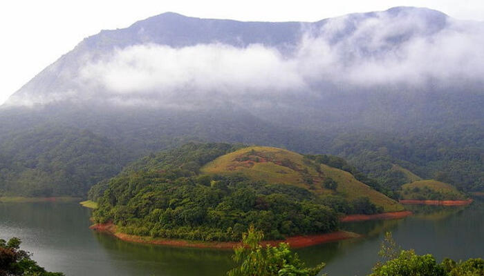
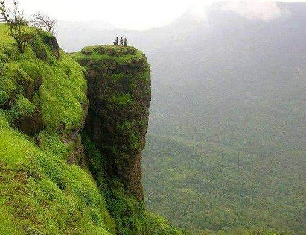
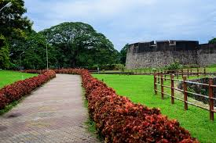
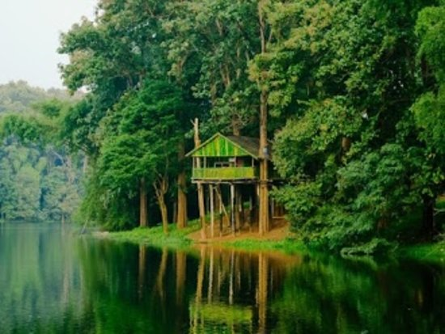
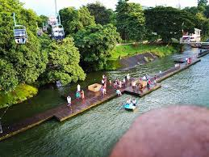
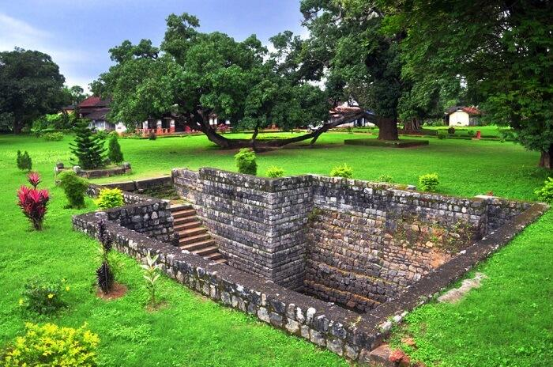

Home
(current)
Explore
Districts
Adventure
Holiday Packages
Cusines
Heritage
The Wild
Reviews
Destination
WaterFalls
Beaches
Museum
Contact Us
Sign In
Search
PALAKKAD
The quaint town of Palakkad in central Kerala boasts of picturesque landscape, tranquil scenery and clear backwaters. Also known as Palghat, Pallakad is located near a wide low pass in the Western Ghats mountain ranges. Palakkad is the land of Palmyras and Paddy Fields and is famous as the chief granary of Kerala. Palakkad is known as the Gateway to Kerala, and it is located strategically at the base of the Western Ghats near a mountain pass that allows easy access to this district.
How to Reach:
Bus
Road transport is the most well-developed form of transport in and out of Palakkad. It is well connected by road to other major cities in Kerala and the nearby states. Coimbatore is the nearest big city and is well connected by buses operated by the Kerala and Tamil Nadu governments.
Train
Palakkad has two railway stations - Palakkad junction for the broad gauge line and Palakkad Town Railway station for the narrow gauge line.
Flight
Coimbatore is the nearest airport, and there are regular bus and taxi services to ferry people to and from the airport.
Places to Visit
Kottakkunnu:
Kottakkunnu derives its name from an old fort, which was built by the Zamorins of Kozhikode (in Malayalam kotta means fort and kunnu means hill). One can still find here traces of this fort.
Nilambur :
Nilambur, most popularly known as the land of teak plantations, is a famous town in Malappuram district. The place is noted for its vast expanse of forest along with its varied wildlife habitats, rivers and waterfalls. It is situated close to the Nilgiri range of the Western Ghats on the banks of the Chaliyar River
Padinjarekkara Beach
Situated at the end of the Tipu Sultan road near Ponnani in Malappuram district, the Padinjarekkara Beach offers a breathtaking view of the confluence of the Bharathapuzha, the Tirur Puzha and the Arabian Sea.
Bharathapuzha:
The freely flowing waves of the river Bharathapuzha, popularly known as Nila, has much to do with the history and cultural traditions of Kerala.
Things to do
Kondotty Nercha:
The 500-year-old Pazhayangadi mosque at Kondotty, about 18 km from Manjeri, is a well-known centre of worship. Kondotty Nercha (nercha means offering), which falls in the month of March / April is the illustrious festival of this mosque.
Mappila Cuisine:
Mappila or Muslim Mappila denotes a member of the largest Muslim group in Kerala. This community, concentrated mostly in the Malabar region of Kerala, developed chiefly because of the pre and post-Islamic Arab contacts.
Betel Market:
Thanks to the fresh green betel leaves of this place, the farmers of this place have been doing business with Karachi for over a century. The betel leaves they produced go by the brand name Tirur Lanka Paan, which is of great demand in the markets of Pakistan for its distinctive flavour
Gallery





